L'histoire du jeu vidéo débute dans les années 1940, où l'idée du jeu vidéo naît au sein des universités lors de recherches sur l'informatique.
Les jeux vidéo ne se font connaitre du grand public qu'à partir des années 1970 avec la commercialisation des premières bornes d'arcade ainsi que les consoles de jeu vidéo, pouvant faire tourner une dizaine de jeux simplistes.
Le jeu vidéo devient alors une industrie, évoluant avec la technologie et marqué par un krach en 1983, à la suite de l'inondation des modèles sur le marché après le boom des années 1970.
| Histoire du jeu vidéo | ||||||||
|---|---|---|---|---|---|---|---|---|
| Générations de consoles | Première: 1972-1980 | Deuxième: 1976-1992 | Troisième: 1983-2003 | Quatrième: 1987-2004 | Cinquième: 1992-2006 | Sixième: 1998-2013 | Septième: 2004-2017 | Huitième: depuis 2011 |
| Chronologie | ||||||||
| Années 1970 | Première génération de consoles: Jeux arcade classique des années 1970s include Space Invaders (1978), Space Race (1973), Speed Race (1974), Gun Fight (1975), Fonz (1976), Night Driver (1976), Breakout (1976), Death Race (1976), Space Wars (1977), Barrier (1979), Speed Freak (1979), Warrior (1979), Tail Gunner (1979), Galaxian (1979), Lunar Lander (1979) and Asteroids (1979). | |||||||
| Années 1980 | La deuxième décennie de l'histoire de l'industrie a été marquée par des hauts et des bas pour les jeux vidéo. En 1983, plusieurs grandes sociétés productrices d'ordinateurs et de consoles étaient tombées en faillite. Les jeux plus vendus de l'époque étaient: SuperMario Bros, Tetris et Pacman | |||||||
| Années 1990 | Une décennie d’innovation, marquée pour la transition aux graphismes 3D à part entière, qui a donné naissance à plusieurs genres de jeux vidéo, notamment le jeu de tir à la première personne, la stratégie en temps réel, l’horreur de survie et le MMO. Les jeux de poche ont commencé à devenir plus populaires. Les jeux d'arcade commencent à décliner. | |||||||
| Années 2000-2009 | Les années 2000 ont été une décennie dominée par Sony, Nintendo, le nouveau arrivant Microsoft. Les polygones tridimensionnels à faible résolution des années 1990 ont cédé la place à des jeux haute définition axés sur le développement d'environnements immersifs et interactifs et l'amélioration de l'intelligence artificielle. Sur le thème IA académique et jeux vidéo | |||||||
| Années 2010-2019 | C’est sont les années de l’émergence du jeu vidéo indépendant. Le marché se divise en deux catégories : les gros studios produisant des jeux très médiatisés et commercialisés à grande échelle et les jeux indépendants, popularisés entre autres par la plate-forme Steam. En juin 2019, Microsoft annonce la neuvième génération de consoles: la Xbox Scarlett est officialisée. | |||||||
Source du text:Wikipedia
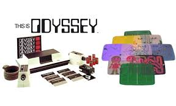 Coleco Telstar 
 Consoles portables:
Consoles portables:  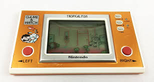
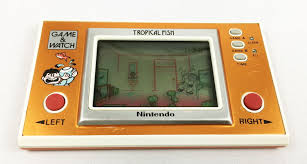
Nintendo Famicom.jpg) Sega Mark III
Sega Mark III 
PC Engine/CD 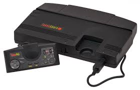 Famicom Super Nintendo 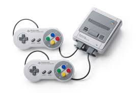
Game Boy  vs Game Gear
vs Game Gear 
Mega drive  vs SNES 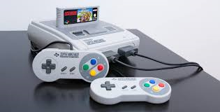
vs SNES 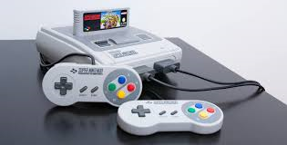
L'arrivée de Sony, avec son Playstation
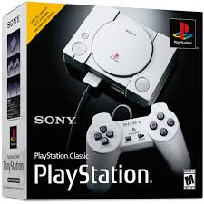 

L'arrivée de Microsoft, avec son Xbox
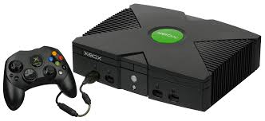
Nintendo de retour "en contrôle" des ventes: Wii, la vedette
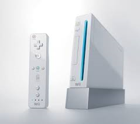
Les Steam Machines vs les Consoles traditionnels
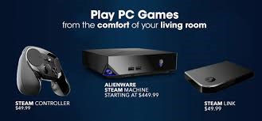
Xbox Scarlett et Playstation 5:

Une création de Cristiane Garcia